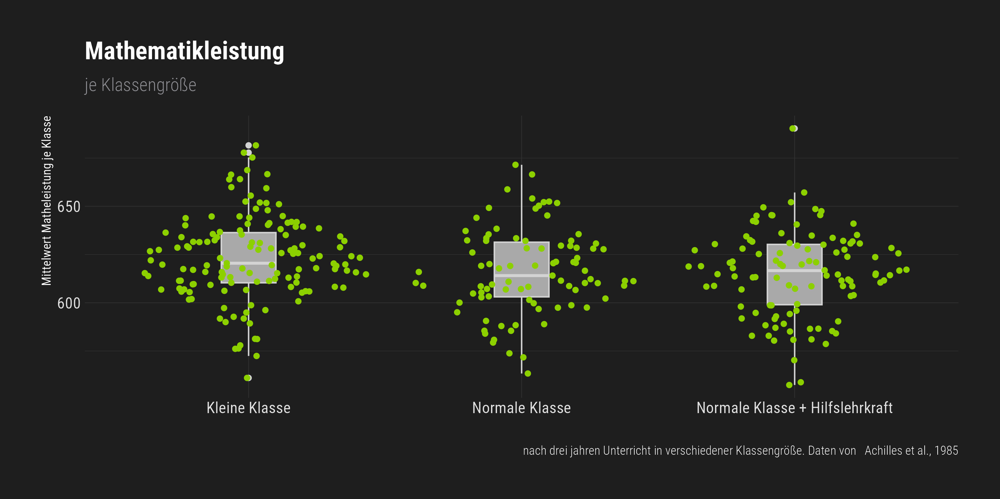
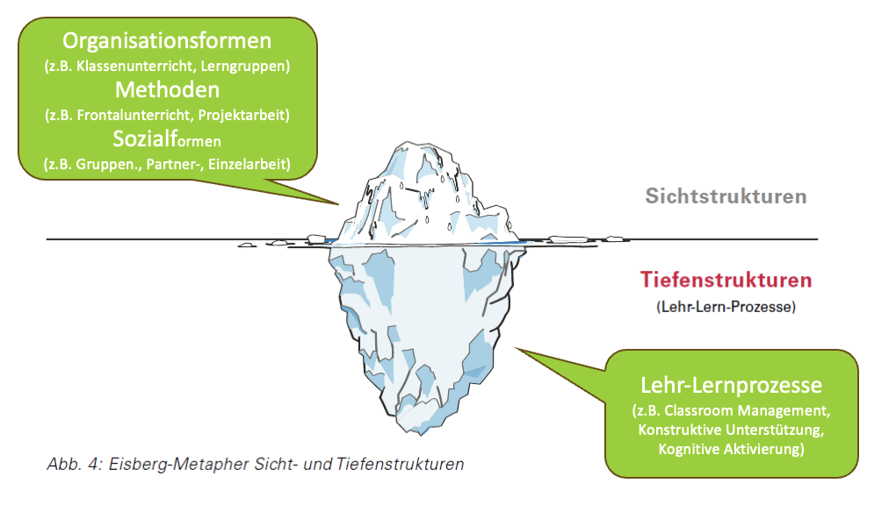

Classroom Management
1. Kompakttag
Dr. Eva Prinz & Dr. Kirstin Schmidt
Pädagogische Hochschule Karlsruhe
Wintersemester 2025/2026
Ihre Vorstellung
Stellen Sie sich mit Ihrem Namen vor und berichten Sie entweder
- in welcher Wimmelfigur Sie sich warum wiedererkennen. Sie können sich dabei auf Ihren Alltag oder den Hochschulkontext beziehen!
… oder …
- ein positives Erlebnis aus Ihrem Schulpraktikum.
Organisatorische Informationen
- Blockzeiten jeweils von 09:00 bis 16:00 Uhr
- pro Tag 1,5 h Mittagspause
- weitere kleinere Pausen flexibel
- Bis spätestens Montagnachmittag Ihre Wunschvertiefung in die ausgelegten Listen eintragen
- Informationsblock zur Studienleistung/Modulprüfung findet am Donnerstag statt
- Seminar steht und fällt mit Ihrer Aktivität
- Tag 1 und 2 verschiedene Inputphasen
- Tag 2,3 und 4 viele Aktivitätsphasen
- Eigene Kopfhörer ab Dienstag mitbringen
- Noch offene Fragen Ihrerseits?
Geplante Pausen
ca. 10:30 Uhr - 10:45 Uhr
ca. 12:00 Uhr - 13:30 Uhr
ca. 15:00 Uhr - 15:10 Uhr
Was erwartet Sie heute?
- Einführung in die Unterrichtsqualität
- Gespräch im Lehrer:innenzimmer
- Wozu Forschung zu Unterrichtsqualität?
- Begriffsverständnisse
- Arbeit mit Ihren Unterrichtsfällen
- Peer Feedback
- Anwendung der Unterrichtsqualität
- Classroom Management
- Historische Entwicklung
- Techniken der Klassenführung nach Kounin
- Vorstellung der Wahlvertiefung
Lernziele
- Unterrichtsqualität erklären können
- Unterscheidung von Oberflächen- und Tiefenstruktur
- Basisdimensionen des Unterrichts kennen, erklären und anwenden können
- Techniken der Klassenführung nach Kounin kennen
Unterrichtsqualität
Gespräch im Lehrer:innenzimmer
Frau Müller: „Heute haben wir in Mathe wieder Stationenarbeit gemacht. Da war wieder was los in der Klasse. Meinen Fünftklässlern hat‘s eine Menge Spaß gemacht. Und alle waren sie dabei.“
Herr Meyer: „Für mich sind diese neumodischen Methoden ja nichts. Das ist mir viel zu viel Unruhe in der Klasse. Am besten funktioniert es immer noch, wenn ich ein neues Verfahren einführe, dann erkläre ich das für alle an der Tafel und danach wird geübt. Ohne Fleiß kein Preis, sage ich immer! Und in der Schule muss eben auch geübt werden.“
Frau Müller: „Aber da langweilen sich die Schüler doch und wer sich langweilt, lernt nichts. Außerdem gilt es doch, die Selbst- und die Methodenkompetenz der Schüler zu fördern. Dies schließt doch ein, dass die Schüler ihr Lernen selbst in die Hand nehmen.“
Think-Pair-Share: Was sagen Sie zu diesem Gespräch? Hat Frau Müller Recht oder würden Sie doch eher Herrn Meyer zustimmen? - Was ist guter Unterricht?
Gespräch im Lehrer:innenzimmer
- Beide haben Recht und Unrecht – es gibt nicht nur eine Methode des guten Unterrichts!
- Das Gespräch bezieht sich auf die Oberflächenmerkmale von Unterricht, nicht auf die Tiefenmerkmale.
- Die Einschätzung einer Methode hat mit den eigenen berufsbezogenen Überzeugungen zu tun.
Wozu Forschung zu UQal?
Lehrer:innen und Studierende sind immer wieder der Meinung die Frage nach »Merkmalen guten Unterrichts« könne mit dem »Alltagsverstand« genauso beantwortet werden, wie mit Unterrichtsforschung.
Dazu ein kleines Quiz. Klicken Sie im Innovation Space auf “Quiz: Unterrichtsqualität - eine Frage der Intuition?” um zum Quiz zu gelangen.
Wozu Forschung zu UQual?
- Klassengröße:
Eine Reduktion der durchschnittlichen Klassengröße von 25 auf 15 steigert die Leistungsfähigkeit der Schüler*innen deutlich.- Im STAR-Experiment (Achilles et al. 1985) waren die Effektstärken eher klein: 
- Much Pain - no Gain:
Wenn Schüler*innen berichten, eine Lernaktivität fühle sich anstrengend an, spricht das dafür, dass diese Lernaktivität nicht optimal adaptiv geplant war.- Retrieval Practice wird als viel anstrengender als Restudying empfunden, kann aber als klar lernwirksamer bezeichnet werden (Kirk-Johnson, Galla, and Fraundorf 2019)
- Der Hans machts eh:
Gruppenarbeit ist meist weniger effektiv als Standardmethoden und fördert auch affektive Outcomes wie Motivation und Emotionen von Lernenden nicht.- Eine Review von qualitativ hochwertigen Studien zeigt eine klare Überlegenheit kooperativen Lernens bzgl. affektiver Outcomes. Bzgl. des Lernzuwachses sind »Gruppenziele bei individueller Verantwortlichkeit« notwendige Kriterien für die Überlegenheit (Slavin 2010).
- Lernstile:
Bedient man den von Schülern bevorzugten VARK Lernstil (visual [V], auditiv [A], read/write [R], kinesthetic [K]) nach Fleming lernen diese mehr.- Qualitativ hochwertige Studien (z.B. Rogowsky, Calhoun, and Tallal 2015) finden keine Bestätigung für die »Verzahnungshypothese«.
- Gendern im Unterricht:
Wenn Lehrer »Schüler« (generisches Maskulinum) sagen, werden weibliche und männliche Personen gleichermaßen adressiert. »Schülerinnen und Schüler« zu sagen ist also eher überkompliziert.- Eher das Gegenteil ist der Fall: Der »Malebias« des Generischen Maskulinums ist sogar größer als der »Femalebias« des »Gendersterns« (Körner et al. 2022)
Wiss. Wissen & Handlungswissen
Charakteristika
- Wissenschaftliches Wissen: Formal, explizit, propositional, diskursiv (Habermas 2014)
- Praktisches Wissen: Implizit, »embodied in action« (Massingham 2019)
Resultierende Vor- und Nachteile
wiss. Wissen: Hoher Gültigkeitsanspruch, breiter anwendbar (generisch)
prakt. Wissen: Schnell generierbar, unmittelbar anwendbar
wiss. Wissen: Aufwändige Genese, begrenzte Modi der »Verwendbarkeit«
prakt. Wissen: Geringer Gültigkeitsanspruch, hochgradig spezifisch
Begriffsverständnisse (I)
{kind=link}
- Eine vglw. breite Definition nach Klieme (2019, S. 396): »Unterrichtsqualität wird hier also verstanden als Gesamtheit der empirisch beobachtbaren Merkmale des Unterrichtsgeschehens , die nachweislich mit der Entwicklung der Lernenden im Sinne der Realisierung von Bildungs- und Erziehungszielen einhergehen.«
- Im Kontext aktueller empirischer (insb. deutschsprachiger) Forschung
- wird meistens die Leistungsentwicklung als Kriterium fokussiert (Kunter & Trautwein, 2013)
Begriffsverständnisse (II)
Listen
- z.B. Meyer (2021)
- Strukturierung
- Time on Task
- Klarheit
- Methodenvielfalt
- Intel. Üben
- …
Dimensionen
- z.B. Klieme (2019)
- Klassenführung
- Konstruktive Unterstützung
- Kognitive Aktivierung
{kind=link}
Begriffsverständnisse: Basisdimensionen
- …
- Im Kontext aktueller empirischer (insb. deutschsprachiger) Forschung
- wird meistens die Leistungsentwicklung als Kriterium fokussiert (Kunter & Trautwein, 2013);
- werden meistens sog. generische Tiefenstrukturen als Unterrichtsmerkmale betrachtet (Praetorius et al., 2018)
- Klassenführung (classroom management)
- Konstruktive Unterstützung (student support)
- Kognitive Aktivierung (cognitive activation)

Vertiefung
Vertiefen Sie die Inhalte nochmals mit Ihrer Sitznachbarin/Ihrem Sitznachbarn und diskutieren Sie dabei auch Ihre Fragen, die Sie an den Text von Drechsel & Schindler (2019) gestellt haben.
Arbeit an Ihren Fällen
„Ein Fall ist eine exemplarische Schlüsselsituation pädagogischen Handelns“ (Goeze & Hartz, 2010)
Peer-Feedback Aufgabe
Tragen Sie sich Ihre Fallbeschreibungen gegenseitig vor und geben Sie sich dabei Rückmeldung zu den folgenden Aspekten:
- Der Fall ist gemäß der Gliederung (auch in der vorgegebenen Reihenfolge; Beschreibung der Situation, vorauslaufende Ereignisse und Erlebnisse, situationsspezifische Bedingungen, anschließende Folgehandlungen und Konsequenzen) strukturiert und für jeden Gliederungspunkt sind Informationen gegeben.
- Die Situation ist so konkret wie möglich verschriftlicht, z.B. auch mit wörtlicher Rede (was wurde gesprochen?).
- Die Kontextfragen sind beantwortet (s. Foliensatz der Vorbesprechung).
- Die Beschreibung der Situation ist durchgängig beschreibend und nicht wertend oder interpretierend.
- Es werden keine Handlungsalternativen generiert.
Überarbeiten Sie - falls notwendig - Ihre Fallbeschreibung und laden Sie diese überarbeitete Version in Innovation Space unter “Ihr herausforderndes Ereignis (überarbeitet)” hoch.
Basisdimensionen in Ihren Fällen
Teil 1: Betiteln Sie Ihren Fall
- Suchen Sie einen passenden Titel für Ihren Fall.
- Schreiben Sie Ihren Titel auf eine Karte.
Teil 2: Anwendung der Basisdimensionen
- Sie haben als Vorbereitung auf die Kompaktveranstaltung Texte zu den Basisdimensionen gelesen. Um Ihr Wissen zu aktivieren, bearbeiten Sie das Quiz “Zuordnung: Basisdimension (KKK) <-> Item im Unterrichtsfeedbackbogen”. Dieses finden Sie im Innovation Space unter “Themenblock 1: Unterrichtsqualität”.
- Welche Basisdimensionen kommen in Ihrem Fall zum tragen? Gibt es eine dominante Dimension?
- Notieren Sie wenige Stichpunkte für die Vorstellung. Vergessen Sie dabei nicht zu begründen, warum Sie sich für welche Basisdimension(en) entschieden haben.
Teil 3: Vorstellung & Clusterung Ihres Falles
- Stellen Sie Ihren Fall inklusive Ihrer Zuordnung zu den Basisdimensionen in zwei bis drei Sätzen vor.
- Gemeinsam clustern wir Ihre Fälle hinsichtlich der Basisdimensionen.
Classroom Management
Komplexität des Unterrichts
„Aushalten können“ der komplexen Anforderungen im Klassenzimmer
→ wichtige Bedingung für Classroom Management (Syring 2017, S.22)
→ CRM muss erlernt werden und bildet sich erst im Verlauf des Berufslebens heraus!
→ CRM = „spezifische Expertenkompetenz“ → Erfahrene Lehrpersonen und Novizen unterscheiden sich darin deutlich!
→ Für Novizen häufig eine belastende Anforderung
Classroom Management: Historische Entwicklung
1. Classroom Management als reaktiver Umgang mit Störungen
- Mittelpunkt der Verantwortlichkeit: Lehrperson
- Ziel: Disziplin zu erhalten und wiederherzustellen, um reibungsloses Lernen zu ermöglichen → Fokus auf Modifikation des individuellen Verhaltens
- Vorgehensweise: Verstärkung durch z.B. Belohnungen, Lob, Tadel und Sanktionen (Behaviourismus)
2. Classroom Management als proaktiver Umgang mit Störungen
- Wende durch Kounin Ende der 1970er
- Mittelpunkt der Verantwortlichkeit: Lehrperson
- Ziel: Prävention von Störungen → Fokus auf Lerngeschehen in der Gruppe
3. Lernerzentriertes Classroom Management
- Wandel seit 1990er: großer Beitrag durch Evertson, Weinstein und Brophy
- Mittelpunkt der Verantwortlichkeit: Lehrperson und Schüler:innen
- Ziel: Förderung der Selbständigkeit und Selbstregulation im Aneignen von Lernstoffen bei Schüler:innen; gemeinsame Verantwortung bei Konflikten
Classroom Management: Historische Entwicklung
1. Classroom Management als reaktiver Umgang mit Störungen
- Mittelpunkt der Verantwortlichkeit: Lehrperson
- Ziel: Disziplin zu erhalten und wiederherzustellen, um reibungsloses Lernen zu ermöglichen → Fokus auf Modifikation des individuellen Verhaltens
- Vorgehensweise: Verstärkung durch z.B. Belohnungen, Lob, Tadel und Sanktionen (Behaviourismus)
2. Classroom Management als proaktiver Umgang mit Störungen
- Wende durch Kounin Ende der 1970er
- Mittelpunkt der Verantwortlichkeit: Lehrperson
- Ziel: Prävention von Störungen → Fokus auf Lerngeschehen in der Gruppe
3. Lernerzentriertes Classroom Management
- Wandel seit 1990er: großer Beitrag durch Evertson, Weinstein und Brophy
- Mittelpunkt der Verantwortlichkeit: Lehrperson und Schüler:innen
- Ziel: Förderung der Selbständigkeit und Selbstregulation im Aneignen von Lernstoffen bei Schüler:innen; gemeinsame Verantwortung bei Konflikten
Kounin (1970) Techniken der Klassenführung
Jacob S. Kounin
- 1912-1995
- amerikanischer pädagogischer Psychologe
- Pionier des Konzepts Classroom Management
- Vorfall in eigener Hochschullehre als Ausgangspunkt seiner Forschung rund um Classroom Management
Ausgangspunkt der Forschung

(Kounin, 2006, S.17)
Arbeitsweise von Kounin (I)
Durchführung verschiedener Studien mit unterschiedlichen Methoden und Stichproben
1. Schwerpunkte der Forschungstätigkeiten: Disziplinierungsmaßnahmen
- Forschungsfragen:
- Wie gehen Lehrpersonen mit Störungen im Unterricht um?
- Beeinflussen Zurechtweisungsmethoden die Schüler:innenreaktionen (Einstellungen und sichtbares Verhalten)?
- Unterscheiden sich verschiedene Methoden (z.B. Klarheit, Festigkeit, Härte) in ihrer Wirkung?
- Beantwortung der Forschungsfragen mittels verschiedener Studien
- College-Experiment
- Vorschulstudie
- Feriencamp-Studie: Fallstudien während und Interviews am Ende des Camps
- Interview-Studie
- High-School-Studie: Interviews zu mehreren Messzeitpunkten, Fragebogen, experimentelle Studie
→ keine konsistenten Ergebnisse, sondern unterschiedliche Auffassungen von schlechtem Verhalten je nach Kontext (Zuhause, Schule oder Feriencamp)
Arbeitsweise von Kounin (II)
2. Neue Methode: Die Videoaufzeichnungen und -analysen:
- Forschungsfragen:
- Inwieweit haben Zurechtweisungsmethoden Einfluss auf Schüler:innenreaktionen? (wie in den vorherigen Forschungstätigkeiten)
- Unterscheiden sich verschiedene Methoden (z.B. Klarheit, Festigkeit, Härte) in ihrer Wirkung? (wie in den vorherigen Forschungstätigkeiten)
- Methoden:
- Videoaufzeichnungen
- Videoanalysen
→ “die Methoden des Umgangs mit schlechtem Betragen (…) [sind] keine signifikanten Determinanten (…) dafür, wie gut oder schlecht sich Kinder in der Klasse aufführen oder wie erfolgreich ein Lehrer verhindert, daß schlechtes Betragen eines Kindes auf andere Kinder übergreift” (Kounin, 2006 S.82)
Arbeitsweise von Kounin (III)
3. Ein Umdenken: Fokus der Forschungstätigkeiten auf Klassenführung
Forschungsfrage:
Korrelieren Verhaltensweisen von Lehrpersonen mit der Mitarbeit von Schüler:innen, der Fehlverhaltensrate von Schüler:innen, der Ansteckung durch Fehlverhalten und der Effektivität von Zurechtweisungen?
Methoden:
- Videoaufzeichnungen
- Videoanalysen
→ “(…) in der Tat [existieren] ganz bestimmte Verhaltensweisen von Lehrern (…), die mit dem Führungserfolg korrelieren (…). Solche Dimensionen des Lehrerverhaltens, die auf das Schülerverhalten zurückwirkten, stellten sich (…) u.a. dar als: Allgegenwärtigkeit (…), Überlappung (…), Reibungslosigkeit der Übergänge (…); (…) Programmierung von abwechslungsreichem Lernen bei der Stillarbeit” (Kounin, 2006, S.85)
Arbeitsauftrag: Techniken der Klassenführung
- Allgegenwärtigkeit und Überlappung (Haag & Streber, 2020, S. 68-69; mögliche Vertiefung: Kounin, 2006, S.89 (unten) - S.100)
- Reibungslosigkeit und Schwung (Haag & Streber, 2020, S. 69-70; mögliche Vertiefung: Kounin, 2006, S.101-116)
- Aufrechterhaltung des Gruppenfokus: Gruppenmobilisierung (group alerting), Rechenschaftsprinzip (encouraging accountability) und Beschäftigungsradius (High participation formats; Haag & Streber, 2020, S. 71-72; mögliche Vertiefung: Kounin, 2006, S.117-130)
- Programmierte Überdrussvermeidung (Haag & Streber, 2020, S.72-74; mögliche Vertiefung: Kounin, 2006, S.131-143)
| Arbeitsschritte | Auftrag |
|---|---|
| 1. Arbeitsschritt (15 Minuten) | Lesen Sie die Ihnen zugewiesene Textpassage in Stillarbeit. Achtung alle Texte befinden sich in derselben Datei! |
| 2. Arbeitsschritt (10 Minuten) | - Klären Sie in Ihrer Expert:innengruppe Fragen rund um die zugeteilte Technik. - Erläutern Sie die Technik in Ihren eigenen Worten und tragen Sie anschließend Ihre eigene Definition in die entsprechenden Zellen im Tabellenmuster ein. - Dieses Muster finden Sie im Innovation Space unter “Tabellenvorlage” in der Sitzung “Classroom Management - Einführung in Kounin”. Laden Sie die Word-Datei herunter. Tragen Sie als Gruppe Ihre Definition ein und wählen Sie eine Person aus, die die Tabelle mit Ihrer Definition wieder hochlädt. |
| 3. Arbeitsschritt (20 Minuten) | Präsentieren Sie sich in der Stammgruppe die jeweiligen Techniken. |
Vorstellung der Wahlvertiefung
- Kollegiale Fallberatung
- Videoproduktion
Videoproduktion: Anforderungen an das Produkt
- Sie produzieren ein Video, in welchem Sie
- sich mindestens auf einen Ihrer Fälle beziehen und eine Handlungsalternative im Sinne der Classroom Management Merkmale nach Kounin oder Evertson exemplarisch demonstriert … und …
- sich mindestens eine weitere Situation überlegen, in der ein Classroom Management Merkmale nach Kounin oder Evertson (in positiver oder negativer Ausführung) inszeniert wird
- Das Video dauert ca. 3 Minuten bis max. 5 Minuten
- Das Video wird auf Grundlage eines detaillierten Skripts eingesprochen
- Die Hauptrollen im Video werden von der jeweiligen Gruppe selbst bestritten; Nebenrollen übernehmen Ihre Kommiliton:innen, d.h. alle spielen in allen Videos mit
- Erstellen Sie zwei Skriptversionen
- Variante 1: Infos anführen, an welcher Stelle Sie welche Merkmale der Klassenführung darstellen
- Variante 2: verblindet, d.h. hier erwähnen Sie nicht welche Klassenführungstechnik(en) Sie darstellen.
Ablauf der Aufnahmetage
- Gruppe baut Raum um (max. 3 Minuten)
- Briefing (5 Minuten)
- Gruppe verteilt die Skripte an Kommiliton:innen
- Gruppe verteilt Rollen und brieft die Kommiliton:innen bzgl. dieser entlang des Skripts
- Take I (max. 5 Minuten)
- Verbesserungsvorschläge an die Rollen (2 Minuten)
- Take II (max. 5 Minuten)
Beispielskript
Kommentare Ihrer Kommiliton:innen
“Abschließend kann ich sagen, dass wir als Gruppe, trotz anfänglicher Bedenken bezüglich des Schauspiels, der Videoaufnahme und sich selbst im Video zu sehen, Spaß hatten das Video zu erstellen und unsere Bedenken unberechtigt waren.”
“Dies war eine nicht einfache Aufgabe hat aber viel für die Zukunft gebracht. Ich bin mit allen Aufgabenbereichen sehr zufrieden von der Gruppenarbeit über zum Skript hin zum Videodreh und würde es genauso im Seminar beibehalten, damit die nächsten Kommilitonen auch so dazulernen können.”
“Zusammenfassend lässt sich sagen, dass das Projekt „Videoerstellung“ eine gelungene Möglichkeit ist, theoretische Inhalte zum Classroom Management nach Kounin und Evertson durch praktische Handlungen umzusetzen. Durch eine gezielte Inszenierung sowohl positiv als auch negativer Merkmale, wird eine tiefe Auseinandersetzung mit der Thematik ermöglicht.”
Vielen Dank!
(weiterführende) Literatur
Haag, L., & Streber, D. (2012). Klassenführung: Erfolgreich unterrichten mit Classroom Management. Beltz.
Kounin, J. S. (2006). Techniken der Klassenführung (M. Gellert & C. Gellert, Übers.). Waxmann.
Seidel, T. (2020.). Klassenführung. In E. Wild & J. Möller, J. (Hrsg.). Pädagogische Psychologie. Springer Berlin Heidelberg. https://doi.org/10.1007/978-3-662-61403-7
Seidel, T., & Shavelson, R. (2007). Teaching Effectiveness Research in the Past Decade: The Role of Theory and Research Design in Disentangling Meta-Analysis Results. Review of Educational Research, 77, 454–499. https://doi.org/10.3102/0034654307310317
Syring, M. (2017). Classroom Management: Theorien, Befunde, Fälle - Hilfen für die Praxis. Vandenhoeck & Ruprecht.
Internetquellen:
Kurzzusammenfassung von Kounin (2006) Techniken der Klassenführung: https://www.youtube.com/watch?v=7n76_BRAvz8
Podcast Psychologie fürs Klassenzimmer, Folge Kounin (1970) | Unterrichtsstörungen: https://open.spotify.com/episode/0GOxzUf00abMESU1dAJL2u?si=1XO09gmuTxqlj1dBbJq6wQ
Classroom Management
2. Kompakttag
Dr. Eva Prinz & Dr. Kirstin Schmidt
Pädagogische Hochschule Karlsruhe
Wintersemester 2025/2026
Geplante Pausen
ca. 10:30 und 10:45 Uhr
Mittagspause von ca. 12:30 Uhr bis 14:00 Uhr
Was erwartet Sie heute?
- Einführung in die Analyse von Unterrichtsvideo
- Potenziale und Herausforderungen
- Einführung in die Analyseschritte
- Durchführung von Videoanalysen
- Classroom Management
- Einführung in die Classroom Management-Merkmale nach Evertson
- Anwendung der Classroom Management-Merkmale nach Evertson
Lernziele
- Potenziale und Herausforderungen im Umgang mit Unterrichtsvideos kennen
- Grundlegende Herangehensweisen videobasierter Reflektion anwenden können
- Techniken der Klassenführung nach Kounin kennen und anwenden können
- Merkmale des Classroom Managements nach Evertson und Kolleg:innen kennen und anwenden können
- Verschiedene Verständnisse von Classroom Management kontrastieren können
Einführung in die Analyse von Unterrichtsvideos
Arbeitsauftrag
Diskutieren Sie in zwei Minuten mit Ihrer Nachbarin / Ihrem Nachbarn folgende Frage:
Welche Potenziale und Herausforderungen sehen Sie im Umgang mit Unterrichtsvideos für Ihr Studium?
Potenziale und Herausforderungen von Unterrichtsvideos
Potenziale
- Unterrichtsvideos sind realitätsnahe und machen Unterrichtsprozesse in ihrer Komplexität und Variabilität sichtbar.
- CM-Kompetenz setzt sich aus theoretischem Wissen über CM und der praktischen Umsetzung von CM zusammen, Förderung muss also beide Komponenten adressieren → Lernen mit Unterrichtsvideos fördert u.a. die Analysekompetenz und erlaubt eine Integration von theoretischem Wissen über CM in Praxissituationen
(vgl. Syring et al 2013b, S.83f.)
Herausforderungen:
- Tendenz zum Beurteilen des Unterrichts
- Begrenzheit durch Inszenierung und Kameraführung
- begrenzte Kontextinformationen
(z.B. Krammer & Reusser, 2005)
Einführung in die strukturierte Analyse von Unterrichtsvideos
Unterrichtsituation 1) beschreiben, 2) erklären und 3) bewerten.
(vgl. z.B. Seidel & Prenzel, 2008; Schwindt, 2008; Syring et al. 2013; Syring, 2017)
Analyseschritte in Anlehnung an Syring (2017) & Kohler et al. (2015)
| Analyseschritt | Mögliche Leitfragen | Beispielantworten |
|---|---|---|
| 1. relevante Situationen identifizieren | - Welche Situationen sind relevant bzw. interessant vor dem Hintergrund der gewählten Theorie (im Seminar: Classroom Management)? Tipp: Schauen Sie sich das Video zunächst einmal am Stück an, bevor Sie in der zweiten Runde die relevanten Situationen identifizieren. |
Unterrichtsbeginn |
| 2. ausgewählte Situation beschreiben | Was ist die Ausgangssituation ? (z.B. Was geschieht? Wen sehe ich? Was sehe ich?; Hilfestellung: Standbild) | Schüler:innen sitzen auf ihren Plätzen. Lehrperson steht vor der Klasse. Ein Schüler betritt den Raum. |
| 3. mögliche Handlungsalternativen (inklusive der Handlung der Lehrperson) erörtern | - Wie handelt die Lehrperson? - Welche Handlungen sind noch denkbar? |
- Handlungsalternative 1 (tatsächliche Handlung der Lehrperson): Lehrperson unterbricht ihren Unterricht, widmet sich ausschließlich dem Schüler zu. - Sie hält dem Schüler eine ausführliche Standpauke, die insgesamt 20 Sekunden dauert. - Handlungsalternative 2: Die Lehrperson nickt dem zuspätkommenden Schüler zu und spricht ihn nach der Schule an. |
| 4.Handlungsalternativen erklären, insbesondere durch das Anwenden des konzeptuellen Wissens zum Thema Classroom Management | - Welche Ursachen haben diese Handlungen? - Welche Konsequenzen haben diese Handlungen? - Welche Merkmale des Classroom Managements werden (nicht) angewendet ? |
- Handlungsalternative 1: Da die Lehrperson nur diesem Schüler ihre volle Aufmerksamkeit widmet, ist die Überlappung eingeschränkt (-). - Möglicherweise ist der Schüler schon häufiger zu spät gekommen, obwohl “Pünktlichkeit” als Regel festgelegt ist. Die Lehrperson überproblematisiert das Zuspätkommen und verliert so den Schwung ihres Unterrichts (-). - Handlungsalternative 2: Da die Lehrperson dem Schüler zu nickt und ihre Erklärungen weiterführt, handelt sie überlappend (+). Außerdem verlagert sie das Gespräch auf die Zeit nach dem Unterricht, wodurch Reibungslosigkeit und Schwung gewährleistet ist (+). |
| 5. Beurteilung/Entscheidung vor dem Hintergrund der Theorie (im Seminar: Classroom Management) | Für welche Handlungsalternative würde ich mich entscheiden? Warum? | - Ich würde mich für Handlungsalternative 2 entscheiden, um zentrale Merkmale der Klassenführung - Überlappung, Reibungslosigkeit und Schwung - zu gewährleisten. |
Unterrichtssequenz analysieren
Plenum
1. Videoausschnitt aus “Der Fall Daniel” gemeinsam anschauen.
2. Welche Sequenzen würden Sie für eine Videoanalyse auswählen?
3. Wie beschreiben Sie die ausgewählte Situation? Fügen Sie die Beschreibung in die Tabelle ein. Diese brauchen Sie zu einem späteren Zeitpunkt.
4. Erörtern möglicher Handlungsalternativen. Listen Sie die Handlungsalternativen in der Tabelle auf.
Einzelarbeit:
5. Öffnen Sie die Aktivität “Videoanalyse: Der Fall Daniel” im Innovation Space. Nutzen Sie gerne auch die Datei “Techniken der Klassenführung - ein Überblick”. Erklären Sie gemäß des vierten Analyseschritts “Erklären” (F.46) die Unterrichtssituation, die wir gemeinsam beschrieben haben. Greifen Sie dabei auch auf die Techniken der Klassenführung nach Kounin zurück. Halten Sie Ihre Teilanalyse im in der Tabellenvorlage fest und laden Sie diese hoch.
Plenum
6. Sammlung der Erklärungen
7. Begründete Entscheidung für eine Handlungsalternative vor dem Hintergrund der Techniken der Klassenführung.
Ihr Arbeitsauftrag
- Schauen Sie sich zunächst die ersten 45 Minuten des Unterrichtsvideos “Geographie - 7. Klasse - In den Savannen (Klassenperspektive)” in Ruhe und für sich an ohne dabei einen der Analyseschritte (vgl. F. 46) durchzuführen. Das Unterrichtsvideo finden Sie im Metaportal “unterrichtsvideos.net”. Achten Sie dabei darauf, dass Sie das Video auswählen, das aus der Klassenperspektive gedreht wurde. Um das Video abzurufen, müssen Sie sich im Metaportal einloggen und im Portal auf “Videosuche” klicken. Folgende Angaben können Ihnen die Suche erleichtern:
- Nutzergruppe: Lehramtsstudierende
- Ort: Sonstige Universität
- Suchbegriff: In den Savannen
Hinweis: Das Video wird ggf. nicht von Safari unterstützt, verwenden Sie also am besten einen anderen Internetbrowser.
Wählen Sie gemeinsam in der Gruppe 1 Szene des Unterrichtsvideos aus, die Sie gemäß der im Seminar formulierten Analyseschritte analysieren (vgl. Folie 46). Hinweis: Der theoretische Hintergrund auf den Sie sich in Analyseschritt 4 beziehen sollen, umfasst Kounins Techniken der Klassenführung. Halten Sie Ihre Gedanken für den jeweiligen Analyseschritt schriftlich in der Tabellenvorlage fest.
Laden Sie am Ende Ihrer Analyse Ihre ausgefüllte Tabelle unter der Aktivität “Videoanalyse: In den Savannen” im Innovation Space hoch und bereiten Sie sich auf eine fünf- bis siebenminütige Vorstellung Ihres Analyseprozesses vor.
- Legen Sie fest wer aus Ihrer Gruppe (max. 2 Personen) das Beispiel vorstellt. Beschreiben Sie in der Vorstellung was in dieser Situation passiert ist, wie Sie diese vor dem Hintergrund der Techniken nach Kounin erklären, welche Handlungsalternativen Sie sehen und wie Sie diese bewerten.
Die Gruppenzusammensetzung dürfen Sie selbst entscheiden; tragen Sie ihre Gruppe in die Liste ein.
Ihr Arbeitsauftrag - Teil 2
Nun hören wir uns Ihre Analysebeispiele an. Bitte beachten Sie, dass Sie als Gruppe jeweils 5 bis 7 Minuten Zeit für Ihre Vorstellung haben. Die Gruppen, die nicht vortragen, erhalten einen Beobachtungsauftrag, den Sie den Kärtchen entnehmen können. Die Kärtchen werden für jede Runde neu verteilt.
Classroom Management nach Evertson und Kolleg:innen
Classroom Management: Historische Entwicklung
1. Classroom Management als reaktiver Umgang mit Störungen
- Mittelpunkt der Verantwortlichkeit: Lehrperson
- Ziel: Disziplin zu erhalten und wiederherzustellen, um reibungsloses Lernen zu ermöglichen → Fokus auf Modifikation des individuellen Verhaltens
- Vorgehensweise: Verstärkung durch z.B. Belohnungen, Lob, Tadel und Sanktionen (Behaviourismus)
2. Classroom Management als proaktiver Umgang mit Störungen
- Wende durch Kounin Ende der 1970er
- Mittelpunkt der Verantwortlichkeit: Lehrperson
- Ziel: Prävention von Störungen → Fokus auf Lerngeschehen in der Gruppe
3. lernerzentriertes und präventives Classroom Management
- Wandel seit 1990er: großer Beitrag durch Evertson, Weinstein und Brophy
- Mittelpunkt der Verantwortlichkeit: Lehrperson und Schüler:innen
- Ziel: Förderung der Selbständigkeit und Selbstregulation im Aneignen von Lernstoffen bei Schüler:innen; gemeinsame Verantwortung bei Konflikten
Classroom Management: Historische Entwicklung
1. Classroom Management als reaktiver Umgang mit Störungen
- Mittelpunkt der Verantwortlichkeit: Lehrperson
- Ziel: Disziplin zu erhalten und wiederherzustellen, um reibungsloses Lernen zu ermöglichen → Fokus auf Modifikation des individuellen Verhaltens
- Vorgehensweise: Verstärkung durch z.B. Belohnungen, Lob, Tadel und Sanktionen (Behaviourismus)
2. Classroom Management als proaktiver Umgang mit Störungen
- Wende durch Kounin Ende der 1970er
- Mittelpunkt der Verantwortlichkeit: Lehrperson
- Ziel: Prävention von Störungen → Fokus auf Lerngeschehen in der Gruppe
3. lernerzentriertes und präventives Classroom Management
- Wandel seit 1990er: großer Beitrag durch Evertson, Weinstein und Brophy
- Mittelpunkt der Verantwortlichkeit: Lehrperson und Schüler:innen
- Ziel: Förderung der Selbständigkeit und Selbstregulation im Aneignen von Lernstoffen bei Schüler:innen; gemeinsame Verantwortung bei Konflikten
Arbeitsweise von Evertson und Kolleg:innen
- Carolyn M. Evertson amerikanische Psychologin
- über 20 Jahre Forschungsarbeit (verschiedene Beobachtungsstudien)
→ 11 Merkmale von Classroom Management entwickelt, evaluiert und in ein Programm zur Unterstützung von Lehrkräften in effektivem Classroom Management (Classroom Organization & Management Program) überführt
Classroom Management
nach Evertson
- Klassenraum vorbereiten
- Regeln planen und Verfahrensweisen klar festlegen
- Konsequenzen festlegen
- Unterbindung von unangemessenem Verhalten
- Regeln und Prozeduren unterrichten
- Gemeinschaftsfördernde Aktivitäten
- Strategien für eventuelle Probleme
- Überwachen des Schüler:innenverhaltens
- Vorbereiten des Unterrichts
- Verantwortlichkeit der Schüler:innen
- Unterrichtliche Klarheit
Peer Feedback zur Videoanalyse (Teil 2)
Teil 1:
Lesen Sie sich den Textauszug von Haag & Streber (2020; S.74 unten - S.77 oben) durch. Den Textauszug finden Sie im Innovation Space unter “Evertson nach Haag und Streber (2020)”. Schauen Sie sich Ihren Videoausschnitt nochmals an, den Sie heute morgen in Ihrer Gruppe vorgestellt haben. Analysieren Sie diesen Videoausschnitt erneut, indem Sie
- in Einzelarbeit
- gemäß der Analyseschritte nach Syring (2017) und Kohler et al. (2015) auch die Classroom Management-Merkmale nach Evertson und Kolleg:innen berücksichtigen. D.h. Nehmen Sie Ihre in der Gruppe erstellte Tablle zur Hand und überarbeiten Sie die Schritte Erklären, Handlungsalternativen und ggf. Ihre Entscheidung.
- Laden Sie Ihre überarbeitete Tabelle in der Aktivität “Videoanalyse - Teil 2: In den Savannen (Peerfeedback)” in der Einreichungsphase hoch.
Vielen Dank!
Literatur
Achilles, C. M., Bain, H. P., Bellot, F., Boyd-Zaharias, J., Finn, J., Folger, J., … Word, E. (1985). The state of Tennessee’s student/teacher achievement ratio (STAR) project (Technical Report). Tennessee State Department of Education.
Berliner, D. C. (2005). The near impossibility of testing for teacher quality. Journal of Teacher Education, 56(3), 205–213.
Doyle, W. (2006). Ecological approaches to classroom management. In C. M. Evertson & C. S. Weinstein (Hrsg.), Handbook of Classroom Management (S. 97–125). Mahwah, NJ: Lawrence Erlbaum.
Drechsel, B., & Schindler, A.-K. (2019). Unterrichtsqualität. In D. Urhahne, M. Dresel, & F. Fischer (Hrsg.), Psychologie für den Lehrberuf (S. 353–372). Springer. https://doi.org/10.1007/978-3-662-55754-9_18
Gold, B., & Syring, M. (2025). Klassenführung/Klassenmangagement. In M. Syring, T. Bohl, A. Gröschner, & A. Scheunpflug (Hrsg.). Studienbuch Bildungswissenschaften 2. Unterricht und Schule gestalten. https://doi.org/10.36198/9783838562193
Haag, L., & Streber, D. (2012). Klassenführung: Erfolgreich unterrichten mit Classroom Management. Beltz.
Habermas, J. (2014). Theorie und Praxis: Sozialphilosophische Studien (9. Aufl). Frankfurt am Main: Suhrkamp.
Kiel, E., Frey, A., & Weiß, S. (2013). Trainingsbuch Klassenführung. Verlag Julius Klinkhardt.
Kirk-Johnson, A., Galla, B. M., & Fraundorf, S. H. (2019). Perceiving effort as poor learning: The misinterpreted-effort hypothesis of how experienced effort and perceived learning relate to study strategy choice. Cognitive Psychology, 115, 101237.
Klieme, E. (2019). Unterrichtsqualität. In M. Harring, C. Rohlfs, & M. Gläser-Zikuda (Eds.), Handbuch Schulpädagogik (pp. 393–408). Waxmann.
Kohler, B., Prinz, E., Schneider, J., & Syring, M. (2015). Ein neuer Blick auf die Praxis. Selbst- und Fremdreflexion mithilfe von Unterrichtsvideos. Schulmagazin, 5(10). 11-14.
Kounin, J. S. (2006). Techniken der Klassenführung (M. Gellert & C. Gellert, Übers.). Waxmann.
Krammer, K., & Reusser, K. (2005). Unterrichtsvideos als Medium der Aus- und Weiterbildung von Lehrpersonen. Beiträge zur Lehrerbildung(23), 35–50. https://doi.org/10.25656/01:13561
Kunter, M., & Trautwein, U. (2013). Psychologie des Unterrichts. Paderborn: UTB.
Massingham, P. (2019). An Aristotelian interpretation of practical wisdom: The case of retirees. Palgrave Communications, 5(1), 1–13.
Meyer, H. (2021). Was ist guter Unterricht? (15. Auflage). Berlin: Cornelsen.
Pietsch, M. (2010). Evaluation von unterrichtsstandards. Zeitschrift Für Erziehungswissenschaft, 13(1), 121–148.
Praetorius, A. K., Klieme, E., Herbert, B., & Pinger, P. (2018). Generic dimensions of teaching quality: The German framework of three basic dimensions. Mathematics Education, 50(3), 407–426.
Rogowsky, B. A., Calhoun, B. M., & Tallal, P. (2015). Matching learning style to instructional method: Effects on comprehension. Journal of Educational Psychology, 107(1), 64–78.
Schneider, J. (2016). Lehramtsstudierende analysieren Praxis: Ein Vergleich der Effekte unterschiedlicher fallbasierter Lehr-Lern-Arrangements. Tübingen: Universität Tübingen.
Schwindt, K. (2008). Lehrpersonen betrachten Unterricht: Kriterien für die kompetente Unterrichtswahrnehmung. Waxmann.
Seidel, T. (2020.). Klassenführung. In E. Wild & J. Möller, J. (Hrsg.). Pädagogische Psychologie. Springer Berlin Heidelberg. https://doi.org/10.1007/978-3-662-61403-7
Seidel, T., & Shavelson, R. (2007). Teaching Effectiveness Research in the Past Decade: The Role of Theory and Research Design in Disentangling Meta-Analysis Results. Review of Educational Research, 77, 454–499. https://doi.org/10.3102/0034654307310317
Slavin, R. E. (2010). Co-operative learning: What makes group-work work? In H. Dumont, D. Istance, & F. Benavides (Eds.), The nature of learning (pp. 161–178). Paris: OECD.
Syring, M. (2017). Classroom Management: Theorien, Befunde, Fälle - Hilfen für die Praxis. Vandenhoeck & Ruprecht.
Syring, M., Reuschling, A., Bohl, T., Kleinknecht, M., Kuntze, S., & Rehm, M. (2013). Classroom-Management lehren und lernen. Zur Bedeutung des Konzepts im Unterricht und dessen Vermittlung in fallbasierten Seminaren in der Lehrerbildung (S. 75–91).
Classroom Management
3. Kompakttag
Dr. Eva Prinz & Dr. Kirstin Schmidt
Pädagogische Hochschule Karlsruhe
Wintersemester 2025/2026
Was erwartet Sie heute?
- Classroom Management
- Anwendung der Classroom Management-Merkmale nach Evertson (Fortsetzung)
- Wahlvertiefung
Videoanalyse: In den Savannen (Part 2)
- Schauen Sie sich Ihren Videoausschnitt nochmals an, den Sie heute morgen in Ihrer Gruppe vorgestellt haben. Analysieren Sie diesen Videoausschnitt erneut, indem Sie
- in Einzelarbeit
- gemäß der Analyseschritte nach Syring (2017) und Kohler et al. (2015) (vgl. F. 46) auch die Classroom Management-Merkmale nach Evertson und Kolleg:innen berücksichtigen. D.h. Nehmen Sie Ihre in der Gruppe erstellte Tablle zur Hand und überarbeiten Sie die Schritte Erklären, Handlungsalternativen und ggf. Ihre Entscheidung.
- Laden Sie Ihre überarbeitete Tabelle in der Aktivität “Part 2: In den Savannen” hoch.
- Treffen Sie sich mit einer Kommilitonin / einem Kommilitonen aus Ihrer Analysegruppe von gestern. Vergleichen Sie Ihre Überarbeitungen: Haben Sie sich auf die gleichen / verschiedene Merkmale von Evertson und Kolleg:innen bezogen? Haben Sie weitere Handlungsalternativen entwickelt? Sind sie zu einer anderen Entscheidung gekommen? Bitte stellen Sie sich Ihre Ausarbeitungen gegenseitig vor, diskutieren und ergänzen ggf. Ihre eigene Analyse.
- Nun kommen Sie in neu zugeteilten Gruppen zusammen, in der jeweils ein Mitglied der Analysegruppen von gestern vertreten ist. Wählen Sie gemeinsam eine bereits von Ihnen in der Gruppe selektierte Sequenz aus. Schauen Sie sich bei Bedarf gerne nochmals die Videosequenz an. Beraten und entwickeln Sie in der Gruppe weitere Handlungsalternativen. Greifen Sie dabei auch auf Ihre Erfahrung in Praktika, dem ISP, Beobachtungen in Ihrer eigenen Schulzeit und in Hospitationen, etc. zurück. Teilen Sie danach Ihre gemeinsame Analyse.
Weitere Elaboration:
Kontrastierung Kounin & Evertson
| Unterrichtsgestaltung | Beziehungsförderung | Verhaltenssteuerung |
|---|---|---|
| Flüssigkeit (Schwung; K) | gemeinschaftsfördernde Aktivitäten (E) | Überlappung (K) |
| Sachmotivation (Überdrussvermeidung) (K) | Verantwortlichkeit der Schüler:innen (E) | Allgegenwärtigkeit (K) |
| Abwechslung (K) | Flüssigkeit (Schwung; K) | |
| Unterrichtliche Klarheit (E) | Gruppenmobilisierung (K) | |
| Klassenraum vorbereiten (E) | Regeln und Verfahrensweisen planen (E) | |
| Unterricht vorbereiten (E) | Regeln und Verfahrensweisen unterrichten (E) | |
| Strategien für eventuelle Probleme (E) | ||
| Überwachen des Schüler:innenverhalten (E) | ||
| Unangemessenes Schüler:innenverhalten unterbinden (E) | ||
| Konsequenzen festlegen (E) |
(angelehnt an Syring et al., 2013b; Syring, 2017)
Weiterführende Literatur
Zusammenfassung des aktuellen Forschungsstandes rund um Classroom Management finden Sie hier:
Gold, B., & Syring, M. (2025). Klassenführung/Klassenmangagement. In M. Syring, T. Bohl, A. Gröschner, & A. Scheunpflug (Hrsg.). Studienbuch Bildungswissenschaften 2. Unterricht und Schule gestalten. https://doi.org/10.36198/9783838562193